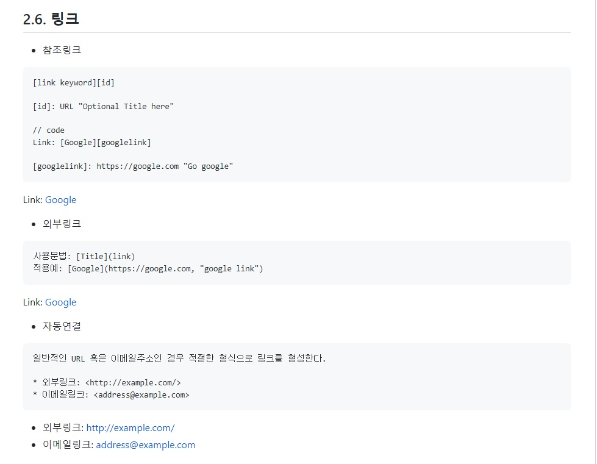

md(markdown)파일이 뭐에요? 먹는건가요?

어려워 보이시나요? 사진을 눌러서 다른 링크로 가는설정을 만드는 시간이 고작 5분도채 걸리지 않습니다.
저같은 초보도 쉽게 만들수 있는 건데 궁금하시면 한번 보시지 않으시겠어요?
웹개발을 하실때 README.md라는 이름의 파일을 보셨을텐데, 이 파일이 markdown 문법으로 작성된 파일 입니다.
md파일을 구성하는 언어가 마크업 언어(markup, markup language)이고, 대표적인 마크업 언어는 html이 있습니다.
태그 등을 이용하여 문서나 데이터의 구조를 명기하는 언어의 한 가지라고 알아두시면 좋을거 같습니다.
일반 텍스트 기반의 마크업 언어로 README.md 파일이나 온라인 문서,
일반 텍스트 편집기로 문서 양식을 편집할때 쉽고 쓰고 읽을 수 있으며 html로 변환이 가능합니다
마크다운은 표준이 없어서 사용자마다 문법이 상이 할 수 있고, 모든 HTML 마크업을 대신하지 못하지만,
문법 자체가 쉽고 관리가 쉬워서 지원 가능한 플랫폼과 프로그램이 다양합니다.
간단하게 알아보는 마크다운 문법(syntax)
1. 제목
제목은 말 그대로 대제목, 중제목 등으로 표현할 수 있고,
사용하는 방식은 제목으로 사용할 텍스트 앞에 ‘#’을 추가하는 것으로 #의 개수에 따라 표현하는 방법이 달라집니다.
제목으로 사용할 수 있는 ‘#’의 개수는 6개까지 입니다.

2.강조
위쪽은 문법이고 아래쪽은 결과 Header문법과 다르게 문법과 글자 사이를 붙여주어야 합니다.


3.링크(link)

4.(이미지)
이미지만 삽입
![ 이미지 설명 ] ( 이미지 링크 )"참고사항"
이미지와 링크
(첫번째 사진이 해당 사진이다)
[![ 이미지 설명 ] ( 이미지 링크 ) ( 이미지url)"참고사항"
문법으로는 제목(header),강조(emphasis),목록(list),링크(links),이미지(image),이미지에 링크,
코드(code)강조, 블록(block) 코드 강조, 인용문(Block Quote) 등등 다양한 방식이 있습니다.
이와 관련 내용으로 더욱 자세하게 나와있는 페이지가 있어서 공유 드립니다.